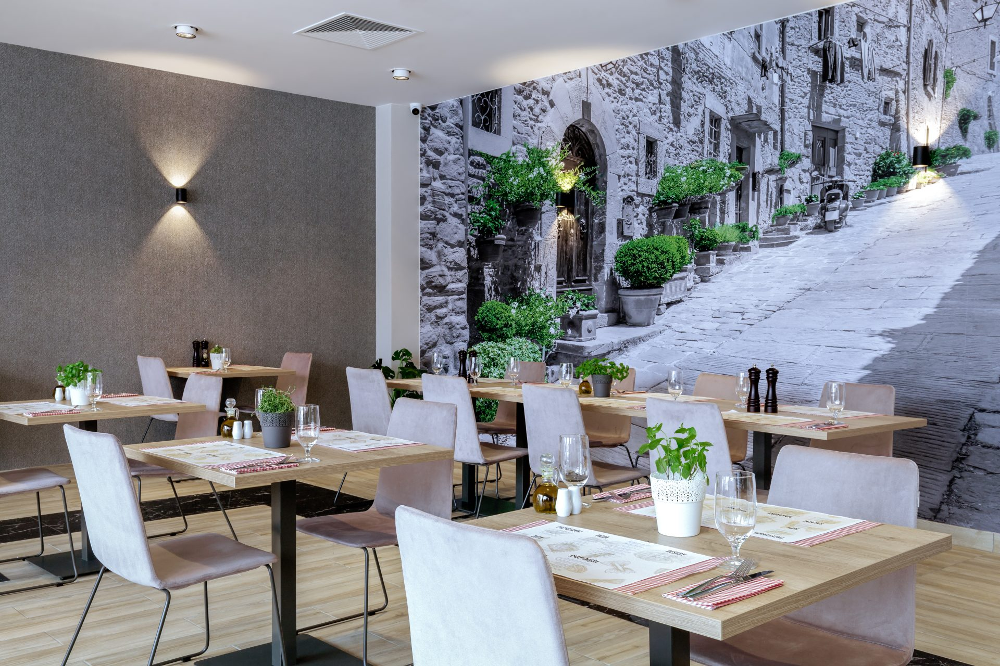

O nas
Słowo o nas, to słowo o naszej kuchni… a ta łączy w sobie polską tradycję z nowoczesnością. W naszej karcie znajduje się kilka „żelaznych” pozycji, które przyciągają naszych stałych gości. To takie dania, których nie można znaleźć nigdzie indziej, np. przygotowywana według oryginalnych receptur wiejska kaczka z jabłkami czy zrazy z dzika w aromatycznym leśnym sosie. Poza tradycyjnymi daniami, nasze menu zmienia się pod kątem dostępności produktów sezonowych, a odzwierciedleniem tego jest specjalna wkładka „Cztery Pory Roku”. Jak przystało na jesień obecnie bazujemy na dziczyźnie, gęsinie i dyni. Ale każda pora roku to dla nas wyzwanie. Część naszych dań (flaki po warszawsku, zrazy Kasztelańskie czy jabłecznik z jabłek z grójeckich sadów) jest promowana Logiem Dziedzictwa Kulinarnego Mazowsze.
Nasze restauracje czynne są przez cały rok od godziny 12.00 a ostatnie zamówienie na kuchnię można złożyć o godzinie 23.00.
